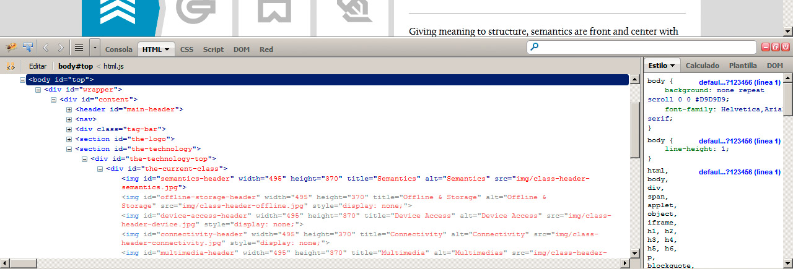
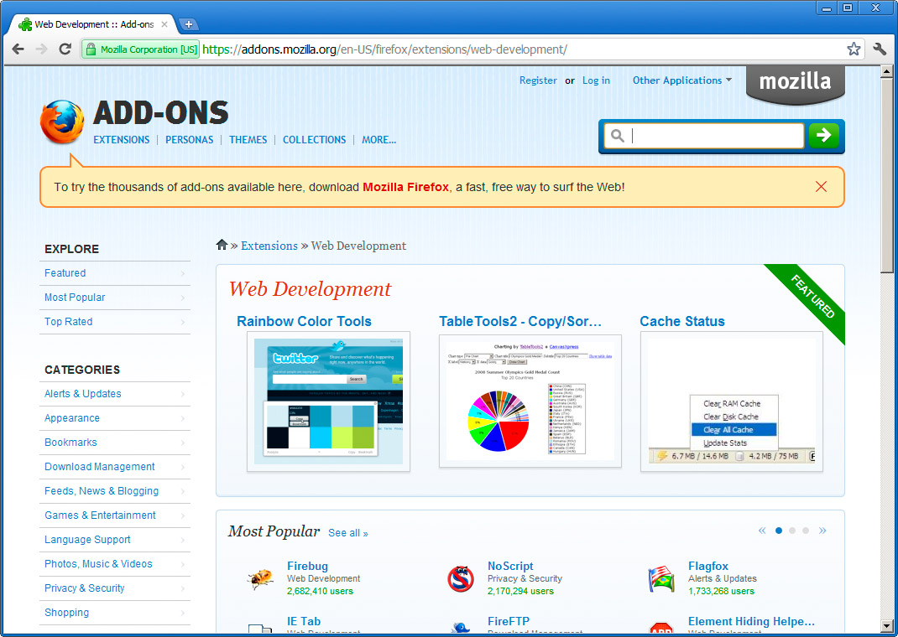
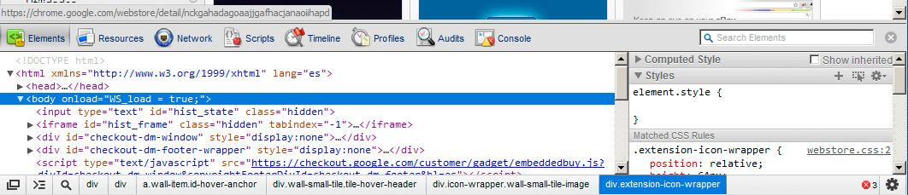
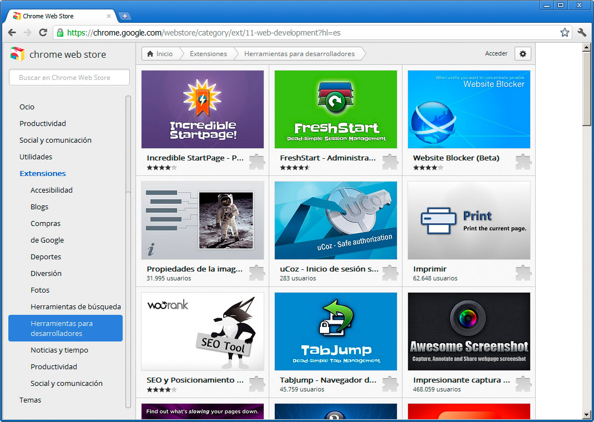

En cada navegador web moderno podemos instalar complementos y extensiones que nos ayudan a realizar determinadas tareas. En el ámbito del desarrollo web contamos con extensiones muy útiles. Cada navegador tiene su propio método de instalación de extensiones pero, en todo caso, son sencillos de aplicar.
Firebug para Firefox es una herramienta perfecta para saber lo que sucede en el navegador. Nos permitirá ver cómo se están aplicando los estilos, por qué no funciona un determinado script de JavaScript, etc.

Junto a la anterior, que es casi indispensable, encontramos otras muchas para seleccionar colores, medir dimensiones, capturar pantallas, etc. En el caso de Firefox encontraremos una nutrida lista en esta dirección:
https://addons.mozilla.org/en-US/firefox/extensions/web-development/

En el caso de Google Chrome no necesitaremos una extensión como Firebug, ya que el navegador incluye una completa herramienta de visualización interna de la página. Basta con hacer clic en cualquier elemento con el botón derecho del ratón y seleccionar la opción Inspeccionar este elemento, para desplegar la ayuda de la figura.

Lo que también encontraremos es una completa sección de herramientas para desarrollar páginas web en su chrome web store, como se recoge en la figura.

Y sucede algo parecido con todos los navegadores. Es cuestión de ir buscando las extensiones que nos resulten más útiles.